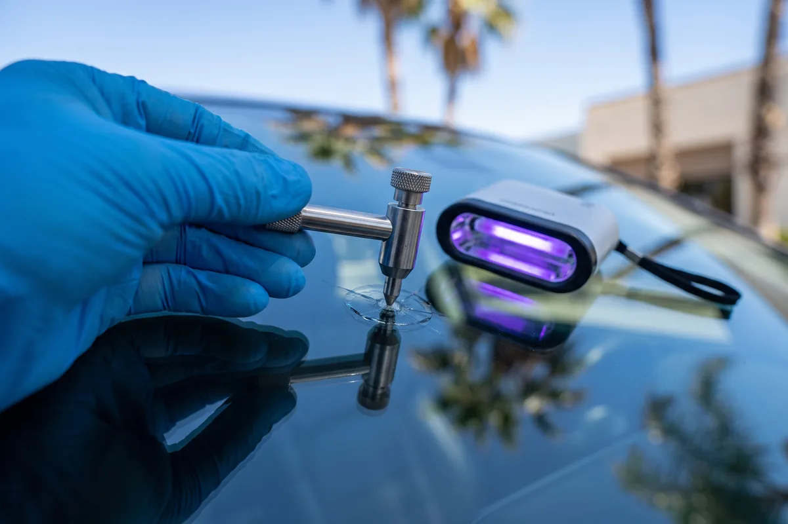
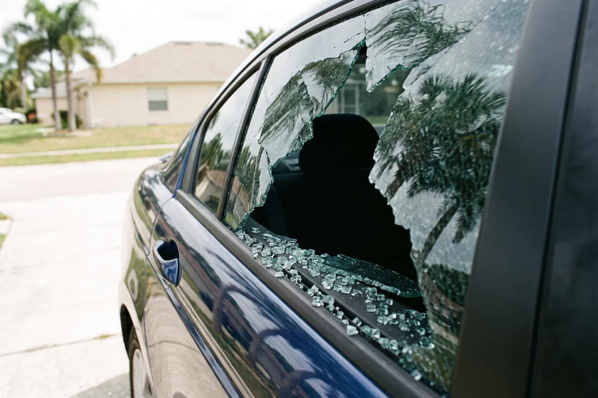
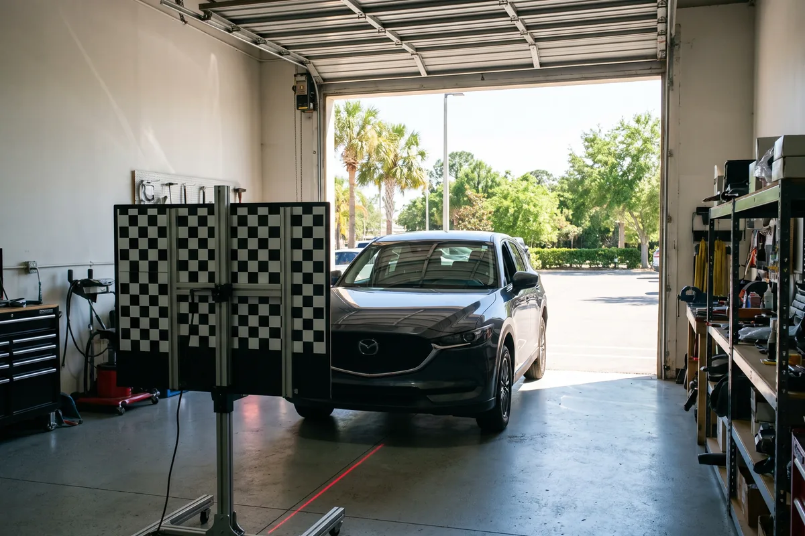

Mobile auto glass
Palm Bay Auto Glass Repair handles the glass problems drivers across Palm Bay, Malabar and West Melbourne run into most, from a single rock chip to a car left open after a storm. Every service below is mobile, and every estimate is free.
Windshield Replacement
Windshield replacement takes out the whole front glass and bonds a new one to the frame. It fixes the safety problem a long crack causes: weakened glass that may not hold the roof or the passenger airbag the way it should in a crash.
Drivers need it when a crack is longer than a dollar bill, reaches the edge of the glass or sits right in the driver’s view. Left alone, a crack keeps growing with every pothole, every slammed door and every blast of cold air on hot glass.
Call us today for windshield replacement in Palm Bay. Read more about windshield replacement.

Rock Chip Repair
Rock chip repair fills a small break with clear resin, cures it with UV light and seals the surface. It solves the most common glass problem in south Brevard: a fresh chip from a stone thrown by the car ahead.
Anyone with a chip smaller than a quarter or a short single crack should call soon. Dirt and humidity work into an open chip within days, and summer heat turns many chips into cracks that only a new windshield can fix.
Call us today for rock chip repair in Palm Bay. Read more about rock chip repair.

Side & Rear Window Glass
Side and rear window replacement installs new door glass, back glass or small vent and quarter windows. It solves a car that cannot be locked or kept dry after a break-in, a stray rock or a door slammed on a damaged window.
Car owners need it right away, because an open window lets in rain, heat and anyone walking by. Broken tempered glass also scatters into door panels, seat tracks and carpet, so the cleanup matters as much as the new glass.
Call us today for side & rear window glass in Palm Bay. Read more about side & rear window glass.

Storm Damage Glass
Storm damage glass service replaces windshields, door glass and back glass broken by falling limbs, wind-blown debris and hail. It solves a vehicle left open to the next downpour after a summer storm or hurricane passes through.
Palm Bay homeowners need it most from June through November, when afternoon storms and tropical systems bring down pine limbs and send yard items flying. Waiting lets water soak the interior, and a cracked windshield can spread before the car is driven again.
Call us today for storm damage glass in Palm Bay. Read more about storm damage glass.

ADAS Camera Calibration
ADAS calibration re-aims the forward camera behind the windshield so lane-keep assist, automatic emergency braking and adaptive cruise read the road correctly. It solves the hidden problem new glass can create: a camera that is aimed a tiny bit off.
Owners of most vehicles built in recent years need it after a windshield replacement. Skip it and the safety systems may warn late, nudge you toward the lane line or shut off with a dash light.
Call us today for ADAS camera calibration in Palm Bay. Read more about ADAS camera calibration.
